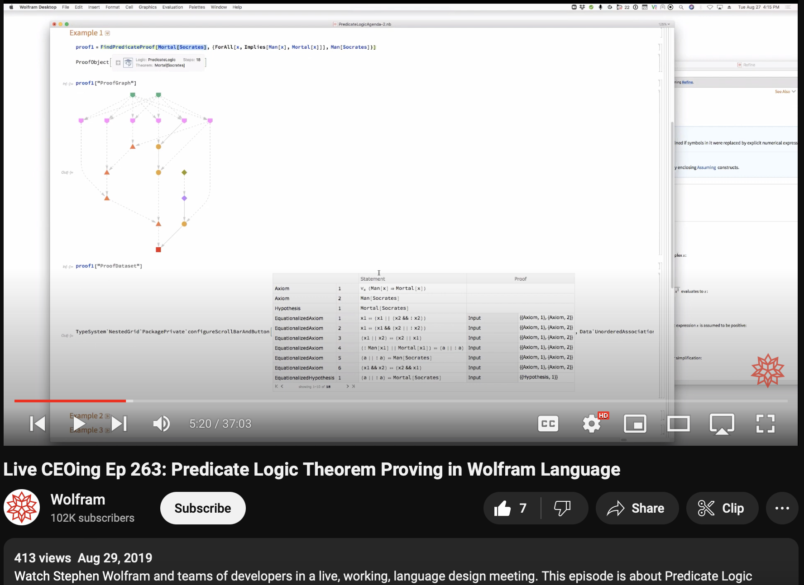

Theorem Prover Overview
Arihant Gadgade
Writings
Date Published: 9/19/2024
Date of Last Edit:
Automated Theorem Provers
ATP Overview
There's plenty of good resources on ATPs so I will just show the vids that I like:
Terence Tao, "Machine Assisted Proof"
Automated Mathematical Proofs - Computerphile
Automated Theorem Proving and Axiomatic Mathematics in Wolfram Language
My WSS24 project dealing with ATP capabilities
WSS24 Project: Study "Logic Puzzle" axiom/proof graphs from TPTP.orgThanks to Wolfram's Live CEOing, while doing research for my project, I was able to find the livestream where Jonathan Gorard was showing the Automated Theorem Proving capabilities he was building to Stephen. I was even able to see the exact moment where Jonathan introduced TPTP to Stephen, which led to the inception of my WSS24 project.
Livestream:
Live CEOing Ep 263: Predicate Logic Theorem Proving in Wolfram Language
11min52secs for the inception of my project: Timestamp for the inception of my WSS24 project
I found it quite funny that there's only a couple hundred views on this as of me watching it: 
The Wolfram ATP is designed off of the Waldmeister Theorem Prover.
Here's the research paper on the development of Waldmeister: WALDMEISTER: Development of a High Performance Completion--Based Theorem Prover
Here you can find a list of different theorem provers that have participated
in the The CADE ATP System Competition: The CADE ATP System Competition
Interactive Theorem Provers
Interactive Theorem Provers are also called Proof Assistants.
One of the more famous of these is called Lean.
Really great talk by Kevin Buzzard about Lean: The Future of Mathematics?
Great site to play with Lean: Lean Game Server
I recommend playing the Natural Number Game.
I will probably end up doing more work in Lean, and will post here: Lean Theorem Proving
Concluding Remarks
I am very excited for the future of Theorem Proving, I believe it to play a significant role in the future of Mathematics, if not being The Future of Math.